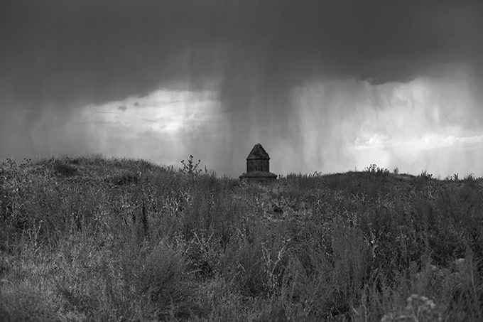
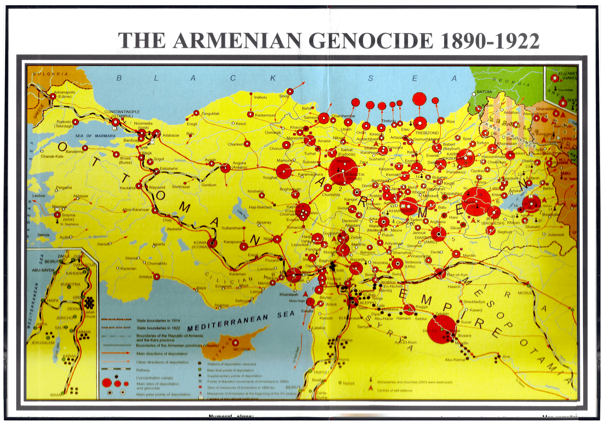
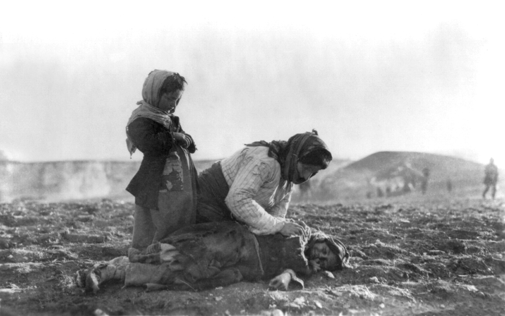

MFM Productions Presents
Who Will Remember
A Film about Armenia - 1915
Based on a screenplay written by Barbara Erysian - a second generation Armenian American.
During the Armenian Genocide, a 16 year old girl taken to an orphanage converts to Islam until she can escape the Turkish soldiers trying to kill her and the children in her charge.
Historical Context
Armenia, 1915, 100 years ago... 20 years before Hitler. The entire population of Armenian Christians was cleansed from the Ottoman Empire. Those who survived were forced to convert to Mohammadism.

“Our strength consists in our speed and our brutality. Genghis Khan led millions of women and children to slaughter with premeditation and a happy heart. History sees in him solely the founder of a state. It’s a matter of indifference to me what a weak western European civilization will say about me.— Adolf Hitler, August 22, 1939*
I have issued the command and I’ll have anybody who utters but one word of criticism executed by a firing squad… Accordingly, I have placed my death head formations and readiness … only in the East with orders to them to send to death mercilessly and without compassion men, women, and children of Polish derivation and language. Only thus shall we gain the living space which we need. Who, after all, speaks today of the annihilation of the Armenians?”
*Kevork B. Bardakjian, Hitler and the Armenian Genocide (Cambridge, Massachusetts: The Zoryan Institute, 1985).

Reader Reviews and Comments on "Who Will Remember"
"...detailed and touching...a great deal of passion and commitment..."- 2nd Generation Armenian-American
"Incredible story."- Reader Comment
"The breadcrumb detail is a heartbreaking one."- Reader Comment
"There are so many heroes within this tale and the writer does a good job in conveying their strength, their hearts, their doubts and their perseverance.”- Movie Industry Professional Review
"...very strong style and tone. It’s bold, inspiring and passionate. Atrocities are atrocious, evil is unbearable, and innocent people are crafted very sympathetically. The writer really is able to create a harsh world with moving moments and beautiful characters.”- Movie Industry Professional Review
"Showing these atrocities seems to be the only way that the masses become informed about these historical and also currently relevant issues of genocide.”- Movie Industry Professional Review
"This is a powerhouse story and script.”- Reader Comment
"...A story that deserves to be told.... this...has huge potential. There are few films about the genocide of the Armenians, and the concept will appeal to a large number of audiences."- Movie Industry Professional Review
"This is a brutal, straight to the gut script and it has a simple straight to the gut concept. It doesn’t try to put any twists on the subject. This is the Armenian Genocide as witnessed by a person who managed to survive it.- Movie Industry Professional Review
"The tragedy keeps building until the devastating final act. The script doesn’t flinch and it keeps the atrocities coming. Those outrages form the backbone of the story and give it a solid emotional grounding.”
"...Shocking and intense... grabs the audience's attention right away.”- Movie Industry Professional Review
"Like all tales of war, especially those involving the massacre of entire people, this story continues to tell the tragedy of mankind in the hopes that we will learn from the mistakes of our past."- ???
"...very captivating characters...”- Movie Industry Professional Review
"Colorful characters that really sacrifice for their family, their loved ones and their ideals. “ The themes and messages ... the horrors and how much some unknown heroes sacrificed, are all very strong and aptly depicted.”- Movie Industry Professional Review